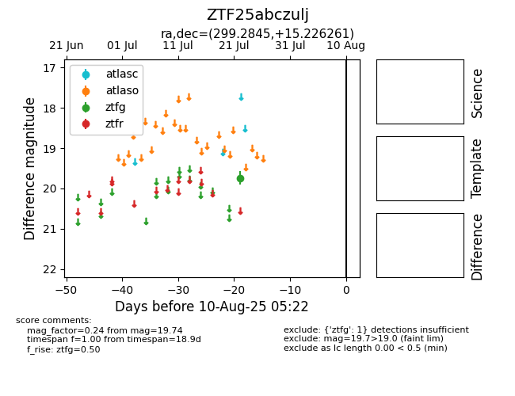

Target ZTF25abczulj at 2025-08-10 05:22, see:
FINK: fink-portal.org/ZTF25abczulj
Lasair: lasair-ztf.lsst.ac.uk/objects/ZTF25abczulj
ALeRCE: alerce.online/object/ZTF25abczulj
alt names
ZTF25abczulj (ztf,fink)
coordinates:
equatorial (ra, dec) = (299.2845,+15.22626)
galactic (l, b) = (54.0868,-7.06894)
photometry
last ztfg=19.74
1 ztfg detections
